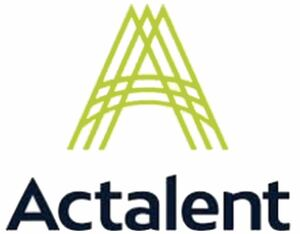

Trade Mark Journal No.2025/046 14 November 2025
WO0000001883444 (35,42)
Office of origin: United States of America
Date of International Registration:17 June 2025
Date of designation in the UK:
17 June 2025

The mark consists of a stylized green "A" that is comprised of three "A" letters that are superimposed and the term "ACTALENT" in dark blue beneath.
The mark contains the colours green and dark blue.
A stylized green "A" that is comprised of three "A" letters that are superimposed and the term "ACTALENT" in dark blue beneath.
- Class 35
- Business assistance, advisory and consulting services in the field of human resources, namely, providing strategic processes for onboarding, coaching, performance optimization, and retention of employees; business consulting and management in the field of clinical trials, namely, management and compilation of computerized databases in the field of clinical trials for business purposes; business project management services; employment agency services, namely, filling the temporary and permanent staffing needs of businesses; employment counseling and recruiting; employment hiring, recruiting, placement, staffing and career networking services; employment recruiting consultation; employment staffing in the field of clinical trials, medical laboratories, engineering, and science; professional staffing and recruiting services; testing to determine employment skills; business management consulting services in the field of human resources and business organizational design; personnel recruitment services and employment agencies; providing employment information; providing networking opportunities for individuals seeking employment; providing employment information via an on-line searchable database featuring employment opportunities; providing employment information via an on-line searchable database featuring employment opportunities and content about employment; providing employment information via an on-line searchable database featuring employment opportunities and content about employment relevant to clinical trials, medical laboratories, engineering, and science; providing on-line employment placement services, namely, matching resumes and potential employers via a global computer network; strategic sourcing, namely, staffing in the field of engineering.
- Class 42
- Computer project management services; scientific consulting services for others in the field of design, planning, and implementation of clinical trials, scientific research and development, and computer software testing; engineering services, namely, engineering for the aerospace, automotive, electrical, power, manufacturing, mechanical, utility, transmission and distributions, product development, and embedded systems fields; hosting a web site featuring technology that enables recruiters and hiring managers to manage the entire candidate attraction and selection process, including administration of back ground checks, assessments and skills tests, as well as compile data that facilitates the continuous improvement of the process; consulting in the field of IT project management.
ACTALENT, INC.
Representative: Sherry Flax SAUL EWING LLP, 1001 Fleet St, 9th Floor, Baltimore MD 21202, UNITED STATES OF AMERICA